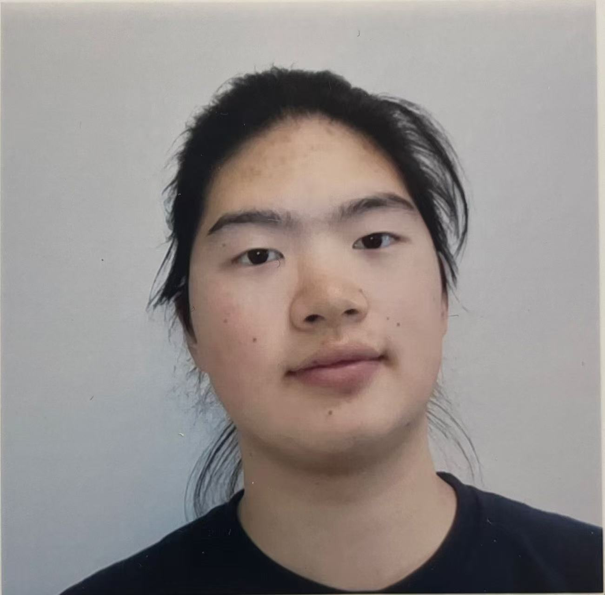

Physics / Photonics / Robotics / Mechanics / Electronics
Hi there, this is Alex. I am a physics undergraduate student at UCSB about to graduate in 2026 Fall. My research interest is in semiconductor physics, especially about the LED devices. I had experience in SSLEEC with Prof. Steve Denbaars and his PhD students on FDTD simulations for LED devices.
I am also interested in robotics(Mechanical Design & Embedded Systems). I made an infantry robot according to the ARC Robotics regulations. I am capable of designing both the mechanical structure and the embedded control system for such robots. I merged open-source designs to create a four-bar linkage suspension omni drive chassis and a light weight gimbal with small rotational inertia for precise movement. I also did a few weight optimization experiments to improve the performance of the robot. To utilize the limited space and weight budget, I use a two develop board embedded system to control the robot efficiently. I also learned 3-axis CNC, milling, lathing and many other tools to help me succeed in building the robot. I have skill with UART, CAN(FDCAN) communication for interboard and motor control. I also know how to setup PID control loops for precise motor control.
Email: botaoalexdeng@gmail.com
GitHub: github.com/botaodeng
LinkedIn: linkedin.com/in/botao-alex-deng-b0447a2a6
WechatID: alex_bt_deng